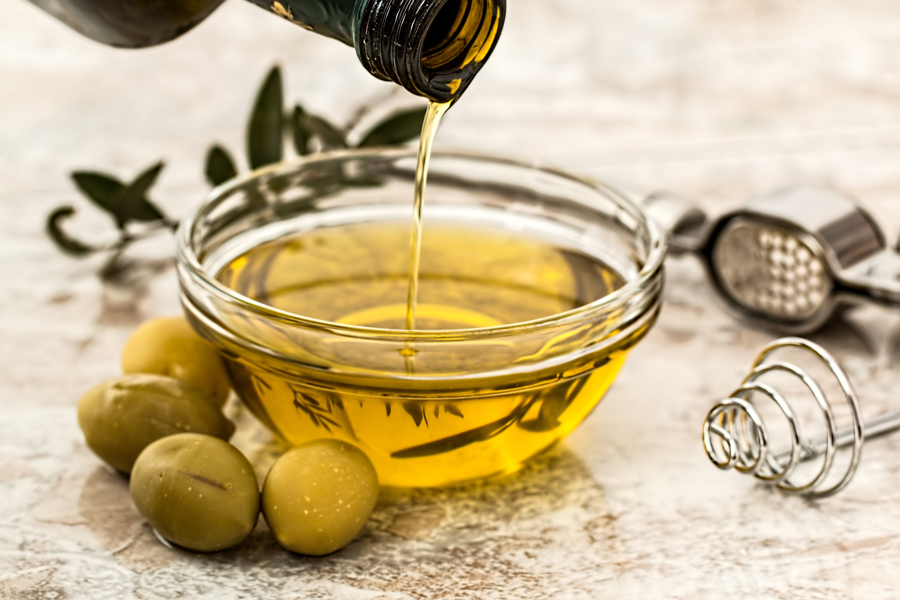
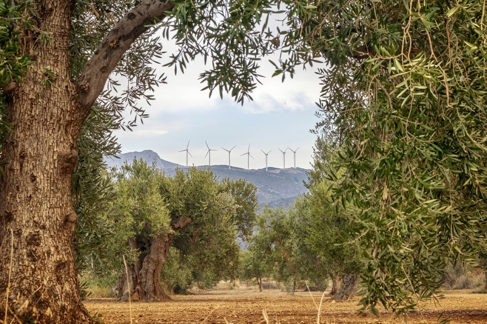

L'impegno sostenibile della famiglia Farchioni per la tutela del territorio e dell'ambiente.
Vai al Download DirettoPrincipali indicatori ambientali, economici e produttivi estratti dal report aziendale.
Ricavi Netti
Intensità Emissiva (Scope 1+2)
Piante Coltivate (Olivi e Viti)
Packaging da Materiali Riciclati
Passa con il cursore sulle immagini per ingrandire i dettagli dei processi produttivi e dei consumi.

Gestione sostenibile delle colture e salvaguardia della biodiversità nelle tenute umbre.

Riduzione del consumo idrico nei campi e transizione verso fonti rinnovabili nei 6 impianti.
Dati sul risparmio idrico nei campi e impiego di fonti energetiche rinnovabili nei processi produttivi.
Storia dell'azienda, evoluzione del brand, obiettivi futuri e riconoscimenti ottenuti.
| Indicatore | Valore 2024 | Variazione vs 2023 |
|---|---|---|
| Consumo Totale Energia | 6.088 MWh | +8,5% |
| Emissioni Dirette (Scope 1) | 332 tCO₂eq | -9,7% |
| Dipendenti a Tempo Indeterminato | 98% (46 su 47) | Stabile |
| Infortuni sul Lavoro | 0 | 0% |
Consulta e scarica i documenti ufficiali messi a disposizione dall'azienda.